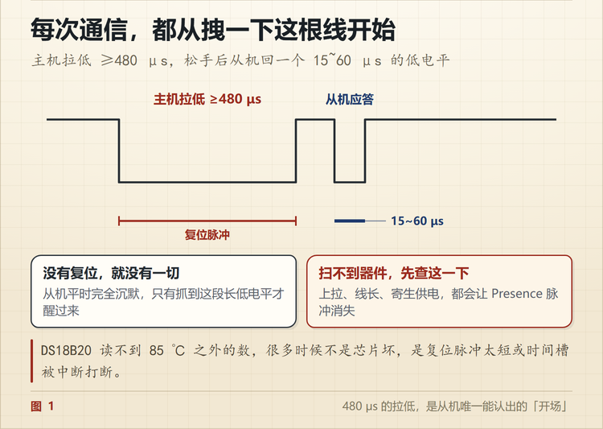
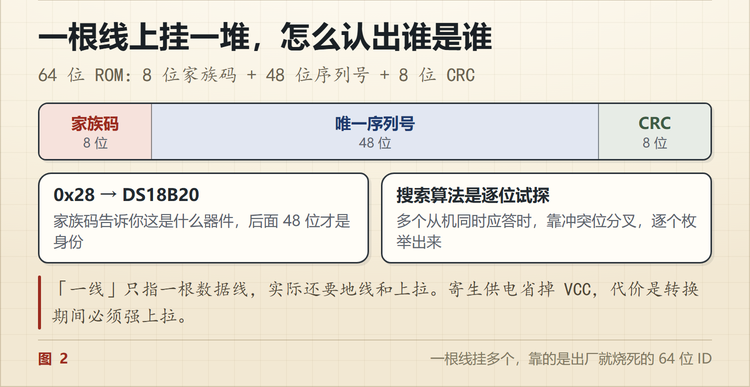

1-Wire 只用一根线，DS18B20 为什么能串一长串
🐵 程序小猴 · 嵌入式通信避坑 Vol.11
一根数据线挂一长串器件，靠的是 64 位身份证和几个微秒的时隙。
第一次用 DS18B20，我把五个传感器并联在一根数据线上，上拉电阻也加了，程序跑起来读温度。
五个全是 85 度。
室内温度不可能是 85，我知道读错了。但错在哪，当时完全没有头绪。
一、「一根线」其实还差一根地
先说清楚这个容易误解的名字。
1-Wire 只用一根数据线，但系统还必须有地。所以接线是 DATA 加 GND，两根。
数据线通过一个上拉电阻接 VCC，通常是 4.7k。空闲时总线是高电平。
主机和从机通信，靠的是在特定时间窗口里把总线拉低。所以判断一个信号不是看电平高低，而是看拉低了多久、什么时候释放。
这一点和 UART、SPI 完全不同。那些协议有明确的电平定义，1-Wire 只有时间。
二、靠时间说话
1-Wire 把每一位的传输切成一个时隙，标准速下大约 60 微秒。
一个时隙里，主机先拉低总线，然后根据拉低的长度表达不同的意思。
| 动作 | 主机怎么做 | 时长 |
|---|---|---|
| 写 1 | 拉低，很快释放 | 拉低 1~15 微秒 |
| 写 0 | 拉低，保持 | 拉低 60~120 微秒 |
| 读 | 拉低 ≥1 微秒后释放，然后采样 | 15 微秒内读 |
写的时候是主机说，从机听。
读的时候反过来，主机只负责发一个短脉冲「起头」，接着放开总线，由从机决定拉低还是放高。主机在 15 微秒内采样。
所以读一个位，其实是主机先拉低一下，然后从机接着说。
三、每次通信都从拽一下开始
总线平时是高电平，从机安安静静待着，什么都不做。
主机要开始一次通信，先把总线拉低至少 480 微秒。
这个长时间的低电平，是所有从机唯一认得的「开场」。从机检测到这个信号，就知道有人来找了。
然后主机释放总线，上拉把它拉高。从机在 15 到 60 微秒之后，主动拉低 60 到 240 微秒，这叫存在脉冲。
主机在这个窗口里采样，采到低电平，说明总线上至少有一个器件在线。

没有复位，什么都没有。 很多「扫不到器件」的问题，根源就在这 480 微秒。时间不够，或者被中断打断了。
四、64 位身份证
一根线上挂五个器件，怎么分别跟它们说话？
靠 ROM ID。每个 1-Wire 器件出厂时烧了一个 64 位的唯一编号。
| 段 | 位数 | 内容 |
|---|---|---|
| 家族码 | 8 | 器件类型，DS18B20 是 0x28 |
| 序列号 | 48 | 全球唯一，出厂烧死 |
| CRC | 8 | 前 56 位的校验 |
主机可以先发「读 ROM」命令，总线上只有一个器件时能读出来。多个器件时不能这么干，会撞车。
多个器件时用「匹配 ROM」，先发 64 位 ID，只有 ID 对得上的那个器件继续响应，其余全部沉默。
所以一长串器件的寻址，本质是逐个点名。

五、搜索算法不是猜
第一次用多个 DS18B20，你不可能知道它们的 ID。
1-Wire 有个搜索命令，能把总线上所有器件的 ID 列出来。原理是逐位试探。
主机发搜索命令后，对 ROM 的每一位做两次读。
第一次读原码，第二次读补码。
- 如果所有器件在这一位都是 0，两次读到 0 和 1
- 如果都是 1，读到 1 和 0
- 如果有的 0 有的 1，两次都读到 0，这叫冲突位
冲突位就是分叉点。主机选一个方向走下去，把走不通的分支记下来，回溯的时候再走。
整个过程像在遍历一棵二叉树，走完就能得到所有器件的 ID。
听起来复杂，但这是 1-Wire 唯一能在单线上做设备枚举的办法。
六、寄生供电的代价
1-Wire 还有个更省的设计，寄生供电。
器件不从 VCC 取电，而是从数据线偷电。总线高电平的时候，器件内部一个小电容存电，供自己用。
这样三根线变两根，在某些布线困难的场合很有价值。
但代价不小。
温度转换这种耗电操作，弱上拉供不上。 上拉电阻 4.7k，电流只有一毫安左右，转换时器件需要几毫安。
所以寄生供电模式下，转换期间要用一个 MOSFET 把数据线直接短接到 VCC，这叫强上拉。转换完了再放开。
很多「寄生供电读出来是 85 度」的问题，就是这个强上拉没做，或者做得太晚。
七、软件模拟最怕中断
1-Wire 的时序窗口是微秒级的。
拉低、延时、释放、采样，中间任何一个环节被打断，这一位就废了。
而单片机里最不缺的就是中断。串口收了个字节、定时器到点了、DMA 完成了，任何一个都可能插进来。
所以 bit-bang 驱动要注意三件事。
关键时序段关中断，或者至少保证中断服务程序足够短。
延时用硬件定时器或者精确的循环，别用不准的软件延时。
如果器件多、时序要求高，直接用带 1-Wire 外设的芯片，或者加专用桥接芯片。
八、读到 85 和 -127 分别是什么意思
DS18B20 有两个数值特别容易让人误判。
85 度。 这是芯片上电后的默认值。温度寄存器初值就是 85，你发完「转换温度」命令但没等转换完成就去读，读到的就是它。
DS18B20 12 位精度的转换时间最长 750 毫秒。发完命令至少要等这么久，或者去读总线看它什么时候放开。
-127 度。 这个值通常不是真实温度，而是「没读到器件」。很多驱动库把读失败统一返回 -127 当错误码。
看到 -127，先去查接线和复位时序，别怀疑传感器坏了。
九、按这个顺序查

| 顺序 | 查什么 | 怎么查 | 典型现象 |
|---|---|---|---|
| ① | 上拉电阻 | 量空闲态数据线电压 | 扫不到器件 |
| ② | 复位脉冲够不够 480 微秒 | 示波器看低电平时长 | 全部无响应 |
| ③ | 存在脉冲有没有回来 | 看复位后 15~60 微秒 | 单个器件掉线 |
| ④ | 时隙有没有被中断打断 | 关键段关中断重试 | 偶发读数错 |
| ⑤ | 转换有没有等够 | 750 毫秒或查总线状态 | 恒读 85 |
| ⑥ | 是不是寄生供电 | 看有没有强上拉 | 转换后读数异常 |
| ⑦ | 线长和支线 | 缩短线、减少节点 | 器件多了就不稳 |
第 ② 步最关键。480 微秒的拉低，是从机唯一认得的开场，短一点都不行。

1-Wire 是一个很典型的工程取舍。
用更严格的软件时序，换更少的硬件连线。
它不适合传数据，只适合读传感器和认身份。用对地方，它很省事；用错地方，会被时序折磨得没脾气。
你手上的 DS18B20 是几个挂一根线？评论区说说。
📌 这是「嵌入式通信避坑」第 11 篇，全系列 14 篇，从串口一路讲到 CAN 和无线选型。
💬 觉得有用就点个在看，下一篇往机房走，讲网口灯亮了，为什么还收不到数据。